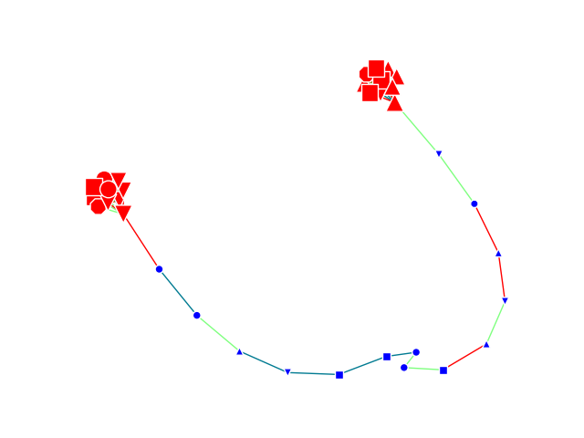

Note
Click here to download the full example code
Coloring the degrees of a node¶
Test
import networkx as nx
import matplotlib.pyplot as plt
import random
from grave import plot_network
graph = nx.barbell_graph(10, 14)
nx.set_node_attributes(graph, dict(graph.degree()), 'degree')
def degree_colorer(node_attributes):
deg = node_attributes['degree']
shape = random.choice(['s', 'o', '^', 'v', '8'])
if deg > 5:
return {'color': 'r', 'size': 20*deg, 'shape': shape}
return {'color': 'b', 'size': 20*deg, 'shape': shape}
def pathological_edge_style(edge_attrs):
return {'color': random.choice(['r', (0, 1, 0, .5), 'xkcd:ocean'])}
fig, ax = plt.subplots()
plot_network(graph, ax=ax, node_style=degree_colorer,
edge_style=pathological_edge_style)
plt.show()
Total running time of the script: ( 0 minutes 0.037 seconds)